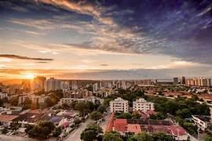
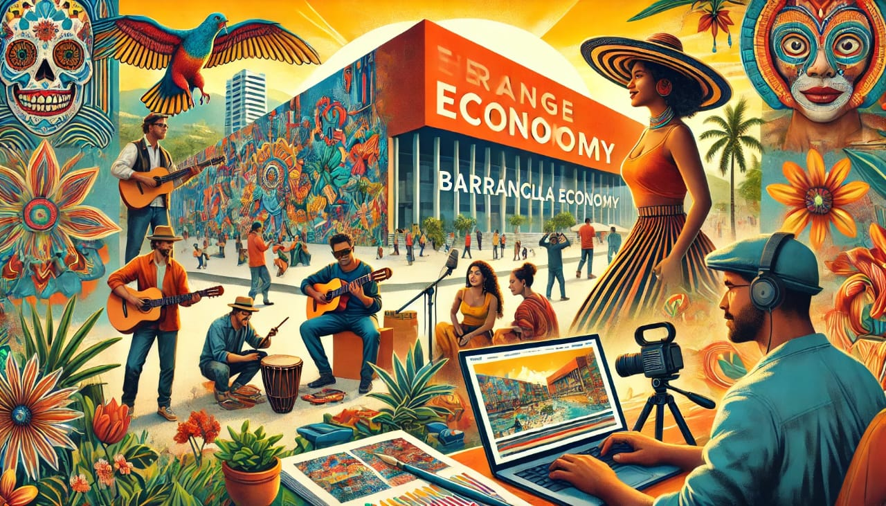
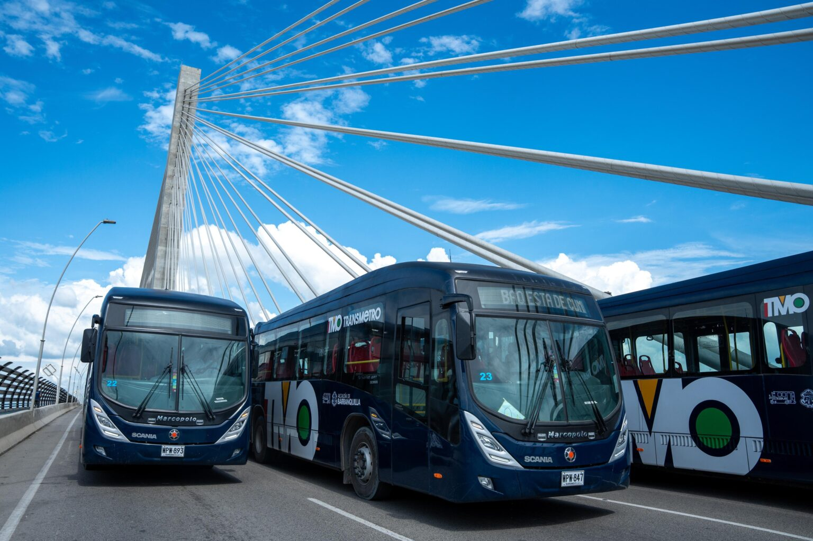

Barranquilla

Barranquilla se consolida como una de las ciudades más importantes de la región Caribe colombiana, destacándose por su desarrollo en infraestructura, comercio y turismo. En los últimos años, la ciudad ha experimentado un crecimiento significativo gracias a la inversión en proyectos urbanos, la modernización de sus espacios públicos y el fortalecimiento de su actividad portuaria. Esto ha permitido mejorar la calidad de vida de sus habitantes y atraer inversión nacional e internacional. El turismo juega un papel fundamental en la economía de Barranquilla, especialmente durante eventos culturales como el Carnaval, que es reconocido a nivel mundial y atrae miles de visitantes cada año. Sin embargo, la ciudad también enfrenta desafíos importantes en materia de seguridad. El aumento de actividades delictivas en algunas zonas ha generado preocupación, lo que ha llevado a las autoridades a implementar estrategias para fortalecer la seguridad y el control. A pesar de estos retos, Barranquilla continúa avanzando y posicionándose como un centro clave de desarrollo en el Caribe colombiano.
Barranquilla es una ciudad estratégica del Caribe colombiano, destacada por su ubicación portuaria y su dinamismo comercial.
Economía
Su economía se basa en:

- Actividad portuaria
- Comercio internacional
- Industria
- Turismo
Infraestructura

En los últimos años, la ciudad ha invertido en:
- Renovación urbana
- Parques y espacios públicos
- Proyectos de vivienda
- Vías y transporte